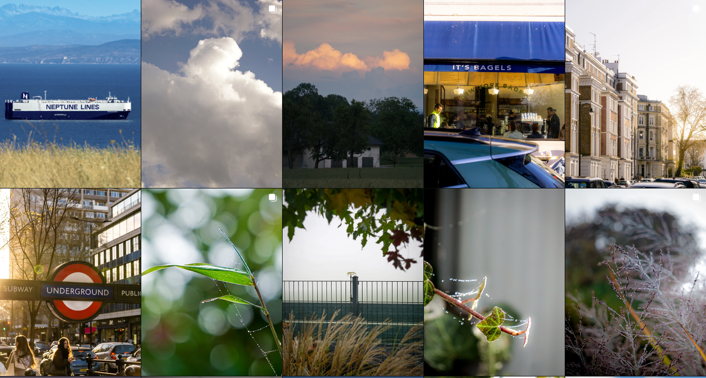

I am someone who is constantly building, experimenting, learning, and trying to understand how things work. Technology plays a major role in how I think. I enjoy programming, web development, hardware, networking, automation, APIs, and creating projects that turn ideas into something functional. I am strongly interested in cars, motorsport, simracing, and performance. I spend time with Assetto Corsa Competizione, improving my driving, working on setups, designing liveries, and competing with others. I also enjoy cycling, motorcycling, training, and activities where progress can be measured and improved. Creativity is another important part of me. I like designing websites, interfaces, wallpapers, dashboards, team branding, and even improving the way my surroundings look. I care about clean design, functionality, and small details. If something feels unnecessary or poorly designed, I usually want to change it. I prefer understanding things rather than simply memorizing them. Whether it is mathematics, physics, programming, or networking, I want to know why something works. I am direct, curious, and persistent when something does not make sense. I value independence and like building things myself. I enjoy taking an idea, experimenting with it, solving problems along the way, and eventually turning it into something real. I do not usually settle for the default solution when I know something could be made better. Beyond technology, I think a lot about people, relationships, identity, and my future. I can be highly analytical while also spending a lot of time reflecting on things that cannot be solved logically. Overall, I am curious, competitive, creative, technically minded, and focused on improvement. I am still figuring out who I want to become, but I know that I want to understand things deeply, create things of my own, and keep getting better.
